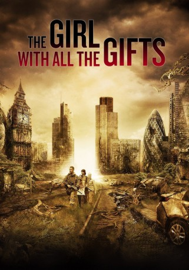

#6345 The Girl with All the Gifts
 gesehen am 09.08.2017
gesehen am 09.08.2017
 
 IMDB-Wertung: 6.7 / 10
IMDB-Wertung: 6.7 / 10  Metascore: 0
Metascore: 0 
In naher Zukunft, sucht eine Plage die Menschheit heim. Durch Parasiten, verwandeln sich fast alle Menschen in blutrünstige Zombies und niemand ist mehr sicher. Eine kleine Gruppe von Kindern scheint jedoch immun gegen den Erreger zu sein und verkörpert somit die Hoffnung für die gesamte Bevölkerung. In einer Militärbasis werden die Kinder untersucht, doch merkwürdige Dinge geschehen…
Jahr: 2016
Dauer: 111 Minuten
FSK: 16
Land: England Studio: Universum FilmTonspuren: DTS - ,
Untertitel: Deutsch,
Auflösung: 1080p (1920x960) Größe: 6133 MB
Genre: Thriller, Horror, Drama
Regisseur: Colm McCarthy
Drehbuch: Erik Balling
Soundtrack:
Darsteller:
 Gemma Arterton als Helen Justineau
Gemma Arterton als Helen Justineau Glenn Close als Dr. Caroline Caldwell
Glenn Close als Dr. Caroline Caldwell Dominique Tipper als Devani
Dominique Tipper als Devani Paddy Considine als Sgt. Eddie Parks
Paddy Considine als Sgt. Eddie Parks Anamaria Marinca als Dr. Selkirk
Anamaria Marinca als Dr. Selkirk- Sennia Nanua als Melanie
- Lobna Futers als Hungry
- Stacey Lynn Crowe als Hungry
 Daniel Eghan als Soldier
Daniel Eghan als Soldier- Fisayo Akinade als Kieran Gallagher
 Anthony Welsh als Dillon
Anthony Welsh als Dillon- Tessa Morris als Rat Girl
- Elise Reed als Aarra - Feral Child
 Ross Green als Hungries
Ross Green als Hungries- Matthew Smallwood als Feral Kid
- Amy Floyd als Hungry
- Macey Ward als Feral Kid
- Amy Newey als Feral Kid
- Joshua Smallwood als Feral Kid
- Eli Lane als Kenny
- Samantha Rushton als Hungry
- Ita O'Brien als Pram Lady Hungry
- Daniel Jack Evans als Hungry
- Jim Macie als Hungry
- Richard Price als Hungry - Tree Hungry
- Pete Buzzsaw Holland als Hungry 3
- A.k. Steppa als Hungry
- Luke Jones als Hungry
 Zak Holland als Hungry 1
Zak Holland als Hungry 1- Alicia l Morris als Feral child
- Sean Evans als Hungry
- Ria Lopez als Hungry
- Laura Marie Howard als Soldier
- Pamela DeAbreu als Hungry
- Alex Reed als Hungree
- Tina Holland als Hungry 2
- Joe Lomas als Joe
- Jonathan Garratt als Soldier
- Philip Campbell als Hungry
- Josh Boffin als Hungry
- Elena Koneska als Hospital Hungry
- Yusuf Bassir als Hungry
- Connor Pratt als Peter
- Savannah Twaite als Feral Child
- Jing Lang als Zombie
- Joel Sheldon als T-Shirt Boy
- Gabriel McMullan als Feral child
- Christopher Green als Hungry
- Callum Lloyd als Classroom Kid
- Paul Capatal als Hungry
Datei: X:\2016(G-M)\Girl with All the Gifts, The (2016, FSK16, 1920x960).mkv seit 09.06.2017
Festplatte: HD 2016(A-Z)
 Es gibt insgesamt 164 Filme in der Gruppe '2016(G-M)'
Es gibt insgesamt 164 Filme in der Gruppe '2016(G-M)'